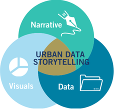

Urban Data Storytelling
Welcome to the Urban Data Storytelling online textbook, written and created by the School of Cities at the University of Toronto.
Urban data storytelling is the process and practice of using data to craft compelling narratives about cities, in order to communicate research and key insights, inform policy-making, build public will, or advocate for change.
Urban data storytelling combines data analytics, data visualization, and narrative techniques to make complex urban trends understandable and engaging for specific audiences, such as policymakers, funders, or community members.
This online textbook has several core modules, each composed of one or more notebooks or tutorials.
- The importance of urban data storytelling
- Urban data analysis
- Urban data visualization
Note that this is a living textbook - we will likely be updating and adding new sections to it in the near future.

How to use this textbook
The table below tells you which textbook section to reference based on what you want to learn or do. For example, if you’re interested in learning how to do some basic analysis of your data in Python, go to the Processing and analyzing data section.
| What do you want to learn or do? | Textbook section |
|---|---|
| Urban Data Storytelling | |
| - How can I start creating a “data story”? - What are the overall steps involved and what should I be thinking about as I do this work? |
The importance of urban data storytelling |
| Urban Data Analytics | |
| - Where can I find relevant data sources? - Now that I’ve found the right data, how do I understand its format? - What tools should I use to analyze my data? - How do I get help when struggling with coding or analysis? |
Introduction to urban data |
| - Which variables should I analyze? - What should the geographic level of my analysis be? |
Measuring the city: metrics and indicators |
| - How do I make sure my analysis is ethical and centers equity? | Data ethics and literacy |
| - What is coding, and how can I use it to analyze my data? - What is Python, and how do I use it? |
Programming with Python and computational notebooks |
| - How do I do basic analysis of my data in Python or Excel? - For example, how do I remove unnecessary information from my dataset or rename some variables? |
Processing and analyzing data |
| - How do I understand the structure of my data and relationships among variables? - In other words, how can I examine some basic statistics? |
Statistical foundations |
| - How do I examine large and complex datasets with multiple variables of interest? -What tools can I use to do this? |
Advanced statistics and multivariate methods |
| - I want to create a map but I don’t understand how to get the right data for it - what do I do? - What is spatial data? - What is GIS (geographic information systems) and how do I use it? |
Spatial data and GIS |
| - How do I explore, analyze or manipulate spatial data by coding in Python? | Spatial data in Python |
| - How do I do something to my spatial data, like create a buffer or find the intersection of two polygons? - How do I convert a list of addresses into points that can be mapped? |
Spatial data processing |
| - What is OpenStreetMap (the Wikipedia of maps and spatial data) and how can I get data from it? | OpenStreetMap |
| - How do I download data from the Canadian census? | Overview of Canadian census data |
| - How do I download data from the U.S. census? | Overview of U.S. census data |
| Urban Data Visualization | |
| - What are some ways I can visualize my non-spatial data (in a plot, for example)? - What should I be thinking about as I create my data visualizations? |
Data visualization |
| - How do I create some basic plots to explore my data in Python? | Exploratory data visualization |
| - What kinds of maps can I make? - What are the different elements of an effective map? |
Maps and visualizing spatial data |
| - How do I make a map that shows… | |
| …different colors for different values? | Choropleth maps |
| …different colors for two different values at once? | Bivariate choropleth maps |
| …symbols whose sizes correspond to some value? | Proportional symbol maps |
| …lines representing travel between locations? | Flow maps |
| …dots whose colors represent some value? | Categorical dot maps |
| - How do I make an interactive online map? | Web map development |
| Urban Data Management | |
| - How do I store, query, or analyze geographic data within a database system? | Introduction to spatial databases |
| - How do I manage and interact with databases using SQL? | SQL fundamentals |
| - How do I manage and interact with spatial databases? | Spatial databases and PostGIS |
| - How do I access a spatial database using Python? | Accessing PostGIS with Python |
Contributors and citing
This online textbook was compiled by Jeff Allen and Julia Greenberg using Quarto with content contributions from (in alphabetical order by last name) Jeff Allen, Karen Chapple, Isabeaux Graham, Julia Greenberg, Aniket Kali, Lindsey Smith, Evelyne St-Louis, Nate Wessel, and Michelle Zhang. Each page lists its authors.
If you want to cite this online textbook, here is the recommended citation:
Allen, J., Greenberg, J., St-Louis, E., Zhang, M., & Chapple, K. (Eds.). (2025). Urban Data Storytelling. School of Cities, University of Toronto.
@book{allen2025urbandatastorytelling,
editor = {Allen, Jeff and Greenberg, Julia and St-Louis, Evelyne and Zhang, Michelle and Chapple, Karen},
title = {Urban Data Storytelling},
year = {2025},
publisher = {School of Cities, University of Toronto},
url = {https://schoolofcities.github.io/urban-data-storytelling/}
}If you want to cite a specific page, here is an example of a recommended citation:
Greenberg, J. & St-Louis, E. (2025). Exploratory data visualization. In Allen, J., Greenberg, J., St-Louis, E., Zhang, M., & Chapple, K. (Eds.), Urban Data Storytelling. School of Cities, University of Toronto.
@incollection{greenberg2021dataviz,
author = {Greenberg, Julia and St-Louis, Evelyne},
title = {Exploratory data visualization},
booktitle = {Urban Data Storytelling},
editor = {Allen, Jeff and Greenberg, Julia and St-Louis, Evelyne and Zhang, Michelle and Chapple, Karen},
publisher = {School of Cities, University of Toronto},
year = {2025},
url = {https://schoolofcities.github.io/urban-data-storytelling/urban-data-visualization/exploratory-data-visualization/exploratory-data-visualization.html}
}License
This online textbook and its notebooks are licensed under Creative Commons Attribution-NonCommercial-ShareAlike 4.0 International Public License.
You are free to:
- Share — copy and redistribute the material in any medium or format
- Adapt — remix, transform, and build upon the material
Under the following terms:
- Attribution — You must give appropriate credit, provide a link to the license, and indicate if changes were made.
- NonCommercial — You may not use the material for commercial purposes.
- ShareAlike — If you remix, transform, or build upon the material, you must distribute your contributions under the same license as the original.